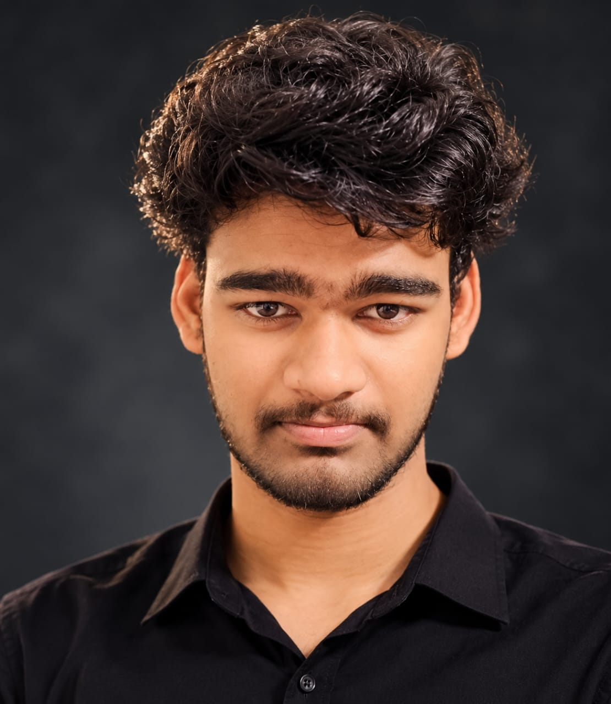

01 / PROJECT
PERSONAL FINANCE
Expense Manager
A personal finance tracker for managing expenses.
Each account has its own private expense list.
COMPUTER SCIENCE STUDENT / HYDERABAD, INDIA
I’m Sathvik, a computer science engineering student drawn to cybersecurity, ethical hacking, and the craft of making useful software.

02 / A LITTLE ABOUT ME
I’m pursuing a B.Tech in Computer Science Engineering at Nalla Narasimha Reddy Group of Institutions. I’m especially interested in understanding how systems stay secure and how software can solve everyday problems.
I recently completed a hands-on cybersecurity and ethical hacking workshop, and I’m building my foundations in programming and security concepts.
I’m looking for an internship, training program, or practical opportunity where I can learn from a team and contribute with curiosity and care.
Download ATS-friendly résumé ↗03 / PROJECTS
PERSONAL FINANCE
A personal finance tracker for managing expenses.
Each account has its own private expense list.
04 / EDUCATION & QUALIFICATIONS
EDUCATION
Nalla Narasimha Reddy Group of Institutions
INTERMEDIATE
SR Junior College
SCHOOL
Krishaveni Talent School
WORKSHOP
Hackers Gurukul at NNRG
COURSEWORK
Weekly assignments completed · Proctored examination attended
CURRENTLY EXPLORING
Python, C, Java, and core cybersecurity concepts.
05 / WHAT I’M BUILDING ON
PROGRAMMING
TOOLS & TOPICS
HOW I WORK
Every skill starts with a question
and a willingness to practice.
06 / WHAT’S NEXT?
Looking for an intern, a curious teammate, or someone eager to grow? I’d be glad to connect.
Get in touch ↗